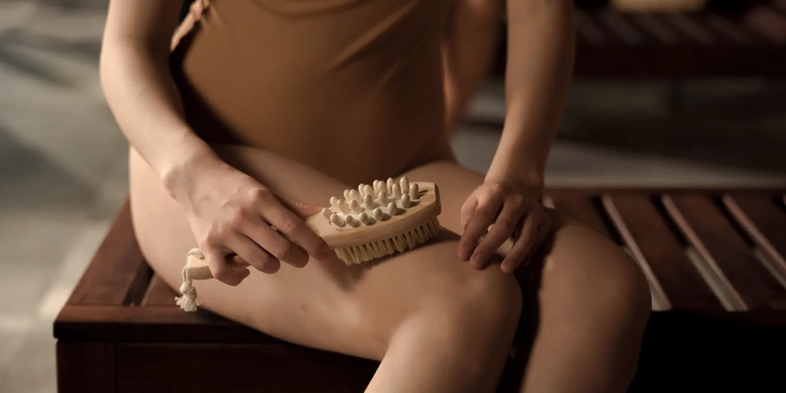

Guía completa del lipedema: qué es, etapas, diagnóstico y tratamiento
Si llevas tiempo buscando respuestas sobre tus piernas o tus brazos y has encontrado información suelta e incompleta, esta guía reúne en un solo lugar todo lo que hoy sabemos sobre el lipedema: qué es, cómo distinguirlo de otras causas de hinchazón, cómo se diagnostica y qué se puede hacer al respecto.

Si durante años te han dicho que tus piernas grandes son "solo cuestión de peso" y algo dentro de ti sabe que no es así, no estás sola. El lipedema es una condición médica real, todavía poco reconocida, que muchas mujeres arrastran años enteros sin el nombre correcto. Esta guía nació para cambiar eso. Reúne en un solo lugar la información que hoy respaldan sociedades médicas y revisiones clínicas sobre qué es el lipedema, cómo evoluciona, cómo se confirma el diagnóstico y qué manejo existe, sin promesas vacías ni tecnicismos innecesarios. A lo largo del texto vas a encontrar enlaces a artículos que van más a fondo en cada tema, para que explores lo que más te interese.
¿Qué es el lipedema?
El lipedema es un trastorno crónico del tejido graso que provoca una acumulación de grasa desproporcionada y simétrica, casi siempre en caderas, muslos y pantorrillas, y en algunos casos también en los brazos. A diferencia de la grasa corporal habitual, el tejido afectado suele sentirse nodular al tacto, duele con la presión y aparece casi exclusivamente en mujeres. Es distinto de la obesidad: aunque ambas condiciones implican más volumen de tejido graso, en el lipedema ese tejido no responde igual a la dieta ni al ejercicio, y suele respetar manos y pies. Si quieres ver con calma las señales que lo diferencian del sobrepeso, te las explicamos en qué es el lipedema y en qué se diferencia de la obesidad.
Lipedema o retención de líquidos: no es lo mismo
Antes de seguir, vale la pena aclarar una confusión frecuente. Las piernas hinchadas pueden deberse a líquido acumulado (edema o retención de líquidos) o a tejido graso (lipedema), y a simple vista pueden parecerse. La diferencia clave está en cómo responde el tejido: el edema suele mejorar al elevar las piernas, con reposo o con medias de compresión, mientras que el volumen del lipedema cambia poco o nada con esas medidas. Una prueba sencilla, el signo de la fóvea (presionar la piel con un dedo para ver si queda una marca hundida), también ayuda a orientar la diferencia, aunque en etapas avanzadas ambos cuadros pueden solaparse. Puedes leer las señales completas en lipedema o retención de líquidos: cómo distinguirlos.
Etapas del lipedema: cómo evoluciona con el tiempo
El lipedema no se presenta igual en todas las mujeres ni se queda siempre en el mismo punto. Para describir cómo cambia, los especialistas usan una clasificación en etapas —también llamadas estadios—, basada en cómo se ve y se siente la piel y el tejido debajo de ella:
- Etapa 1: la piel se ve lisa, pero al palpar se sienten pequeños nódulos bajo la superficie, como granitos de arroz.
- Etapa 2: la superficie se vuelve irregular, con textura de "piel de naranja" o acolchada, y nódulos más grandes.
- Etapa 3: el tejido se siente más firme y aparecen pliegues de piel y grasa más marcados, sobre todo en muslos y rodillas.
- Etapa 4 o lipo-linfedema: el volumen del tejido llega a comprimir los vasos linfáticos y aparece hinchazón que sí compromete pies y tobillos, algo que el lipedema "puro" casi nunca hace.
La etapa describe sobre todo el aspecto del tejido, no la intensidad del dolor: puedes estar en una etapa temprana y sentir mucha molestia, o en una etapa avanzada con síntomas más llevaderos. La progresión, además, varía de una mujer a otra: en muchos casos es lenta y se acelera en momentos de cambio hormonal, como veremos más adelante. Te contamos cada etapa con más detalle en etapas del lipedema: cómo evoluciona con el tiempo.
Cómo se diagnostica el lipedema
Una de las dudas más frecuentes es cómo se confirma el lipedema, porque no existe un único examen de sangre o de imagen que lo haga por sí solo. El diagnóstico es principalmente clínico: se apoya en tu historia (cuándo empezaron los cambios, si hay antecedentes familiares) y en un examen físico cuidadoso. Ese examen revisa la simetría, el dolor a la palpación y la textura del tejido. También evalúa el signo de Stemmer (un pellizco suave en la piel de la base del segundo dedo del pie, que en el lipedema se puede levantar sin dificultad). La ecografía y, con menos frecuencia, la resonancia magnética, pueden servir de apoyo para descartar otras causas, aunque no bastan para confirmar el lipedema por sí solas. Este camino explica, en parte, por qué el diagnóstico correcto suele tardar años: la condición sigue siendo poco conocida en la formación médica general. Puedes leer el paso a paso completo en diagnóstico de lipedema: cómo se confirma.
Tratamiento y manejo del lipedema
Hoy el lipedema no tiene cura, pero sí se puede manejar, y el abordaje que mejor resultado suele mostrar es el multidisciplinario. La compresión —idealmente con prendas de tejido plano, ajustadas a la medida y con la clase de compresión más baja que alivie tus síntomas— es uno de los pilares. Junto a ella están el drenaje linfático manual, el movimiento y el cuidado de la alimentación. En Seravena el foco está puesto en ese manejo conservador, sin cirugía. Para los casos muy avanzados en los que estas medidas no bastan, algunos comités de expertos consideran la liposucción especializada como una opción adicional, siempre después de haberlas intentado primero y en manos de un equipo con experiencia específica.
La alimentación: ayuda, pero no basta sola
Es común probar dieta tras dieta y notar que las piernas o los brazos con lipedema casi no cambian, aunque sí se pierda volumen en el resto del cuerpo. Esto no es falta de esfuerzo: el tejido del lipedema parece resistente a la dieta y al ejercicio. Eso no significa que la alimentación no importe. Ayuda a controlar el peso corporal total, para que no se sume una obesidad adicional a un cuadro ya exigente para tus piernas, y patrones antiinflamatorios se han asociado con menos dolor en algunas mujeres. Te contamos el porqué en dieta y lipedema: por qué la alimentación sola no basta.
Moverte sin miedo: el papel del ejercicio
Moverte con lipedema no solo es posible: puede ser una herramienta clave. El movimiento de bajo impacto activa la llamada "bomba muscular" de la pantorrilla y el muslo, que favorece el retorno de sangre y linfa hacia el corazón. La natación y el aquagym suelen tolerarse especialmente bien, porque la flotabilidad reduce el impacto sobre las articulaciones y la presión del agua actúa como una compresión natural. Caminar, la bicicleta y el yoga terapéutico también son buenas opciones; conviene evitar o limitar correr sobre superficies duras y los saltos repetitivos, que pueden sobrecargar rodillas y tobillos. Encuentra la guía completa en ejercicio y lipedema: cómo moverte sin miedo y sin dolor.
El dolor por lipedema y su manejo conservador
El dolor es uno de los síntomas más frecuentes del lipedema y tiene una explicación real. El tejido graso afectado está inflamado, con el drenaje linfático alterado y cambios en el tejido conjuntivo que lo rodea, lo que genera presión mecánica y dolor a la palpación. El calor, estar mucho tiempo de pie o sentada y los cambios hormonales del ciclo suelen intensificarlo. El manejo conservador —compresión, drenaje linfático manual, movimiento de bajo impacto y control del peso corporal general— puede ayudar a aliviarlo, aunque no elimina el tejido de fondo. Si el dolor es una de tus principales preocupaciones, revisa dolor por lipedema: causas y manejo conservador.
El lipedema no es una cuestión de disciplina ni de fuerza de voluntad: es una condición médica real, y merece ser reconocida, nombrada y acompañada como tal.
Lipedema vs linfedema: dos condiciones distintas
Otra confusión habitual es con el linfedema. Aunque ambos pueden hacer que las piernas se vean más grandes y pesadas, su origen es distinto. En el lipedema el problema de fondo es el tejido graso; en el linfedema, es la acumulación de líquido linfático por un drenaje que no funciona bien. El signo de Stemmer, la afectación (o no) de los pies y la simetría ayudan a diferenciarlos, aunque con los años el lipedema puede sobrecargar el sistema linfático y sumarse un componente de líquido —lo que se conoce como lipo-linfedema—. Encuentra el resto de las diferencias en lipedema vs linfedema: diferencias claras.
Lipedema y momentos hormonales de tu vida
El lipedema suele iniciar o empeorar en momentos de cambio hormonal marcado: la pubertad, el embarazo y, para muchas mujeres, la perimenopausia y la menopausia. La caída de estrógeno en esta última etapa parece influir en el tejido conectivo, la permeabilidad de los vasos y el drenaje linfático, aunque es un campo de investigación activo y todavía queda mucho por entender con precisión. Lo que sí parece consistente es que la menopausia actúa como un punto de inflexión: para algunas mujeres es cuando el lipedema se hace evidente por primera vez, y para otras, cuando una condición ya diagnosticada avanza más rápido. Te contamos más sobre esta relación en lipedema y menopausia: por qué se relacionan.
Lo que debes tener claro
El lipedema es una condición crónica real, no una falta de voluntad ni un problema que la dieta resuelva por sí sola. Se manifiesta con acumulación simétrica de grasa, dolor al tacto y facilidad para los moretones. Evoluciona en etapas que no son iguales para todas las mujeres, y se diagnostica con historia clínica y examen físico, sin una prueba única que lo confirme. Y aunque hoy no tiene cura, sí se puede manejar con un enfoque conservador y multidisciplinario que combina compresión, movimiento, alimentación cuidada y, cuando hace falta, drenaje linfático. Si te reconoces en algo de lo que leíste aquí, el siguiente paso es una valoración con nuestro equipo. En nuestra página sobre lipedema puedes conocer cómo acompañamos esta condición en Seravena, y cuando quieras, agenda tu valoración para empezar con información clara y acompañamiento real.
Preguntas frecuentes
¿El lipedema tiene cura?
Hoy el lipedema no tiene cura, pero sí se puede manejar. El enfoque conservador —compresión, movimiento de bajo impacto, cuidado de la alimentación y, cuando hace falta, drenaje linfático manual— puede ayudar a controlar los síntomas y a que el tejido avance más despacio. En casos muy avanzados, algunos comités de expertos consideran la liposucción especializada como una opción adicional, siempre después de haber intentado el manejo conservador.
¿Cómo sé si tengo lipedema o es obesidad?
El lipedema suele afectar ambas piernas (y a veces los brazos) de forma simétrica, casi siempre respetando manos y pies, y el tejido duele al tocarlo y se llena de moretones con facilidad. La grasa por obesidad no suele doler, se distribuye por todo el cuerpo y responde en mayor o menor medida a la dieta y al ejercicio, algo que en las zonas con lipedema casi no ocurre. La forma más confiable de saberlo es una valoración clínica con un profesional que conozca bien la condición.
¿El lipedema siempre empeora con el tiempo?
No necesariamente, ni al mismo ritmo en todas las mujeres. En muchos casos la progresión es lenta a lo largo de los años y tiende a acelerarse en momentos de cambio hormonal, como la pubertad, el embarazo o la menopausia, o tras aumentos importantes de peso. Un manejo adecuado y a tiempo puede ayudar a que los síntomas se mantengan más controlados.
¿Qué tratamientos existen para el lipedema?
El manejo conservador es la base. Incluye prendas de compresión (idealmente de tejido plano), movimiento de bajo impacto como caminar o nadar, drenaje linfático manual, cuidado de la piel y una alimentación equilibrada que ayude a controlar el peso y la inflamación, sin prometer que hará desaparecer el tejido. El acompañamiento suele ser multidisciplinario, con valoración vascular, nutrición, fisioterapia y, si hace falta, psicología.